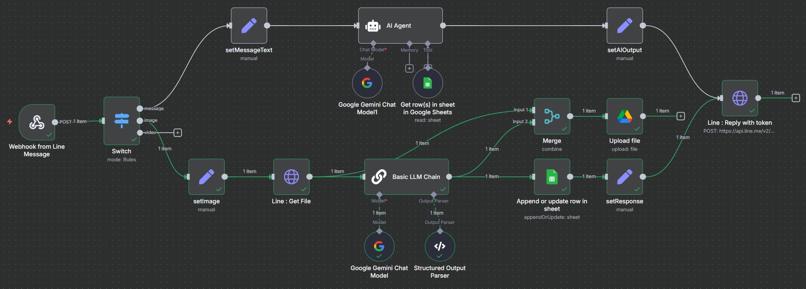
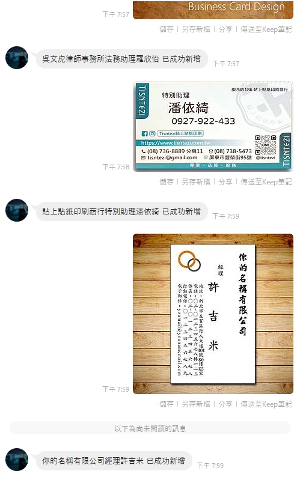
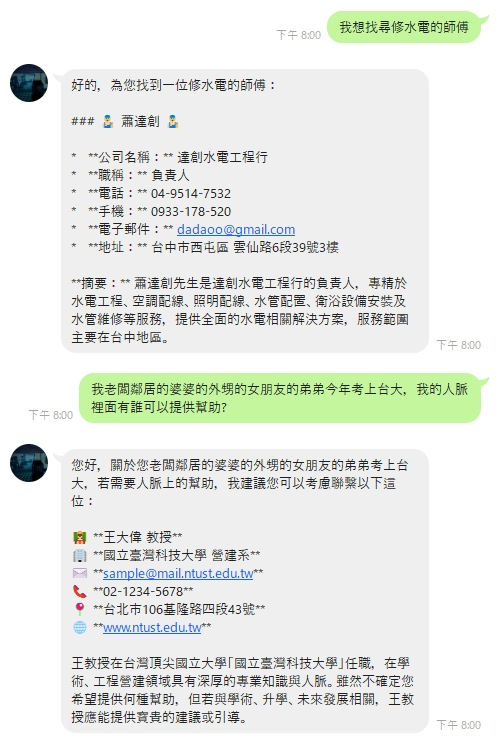
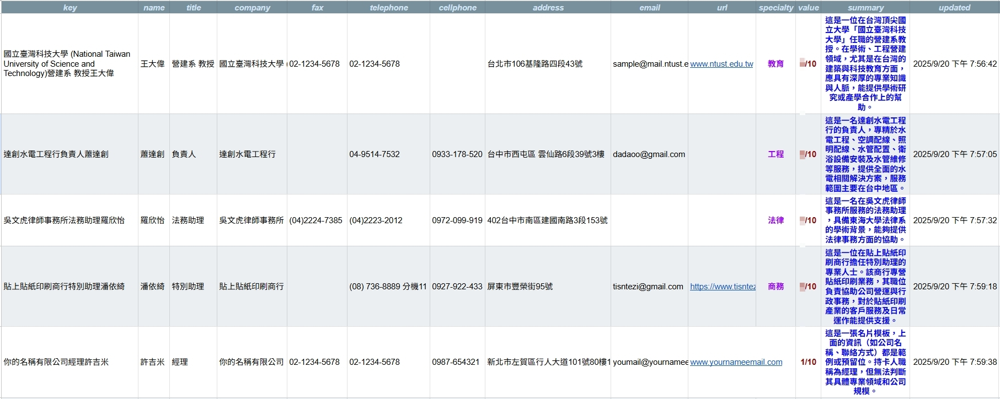
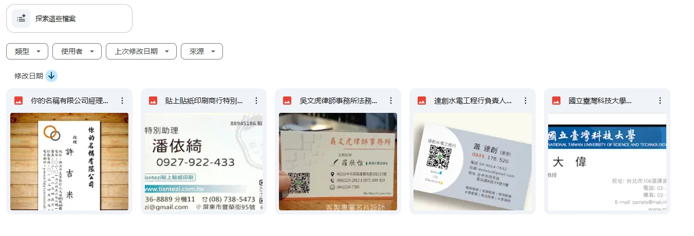

用 LINE + AI 打造你的個人 CRM：n8n 名片王
「拍照即建檔，AI 自動分析，讓你的人脈活起來。告別手動輸入，迎向智慧人脈管理。」
項目概述
在商務社交場合，交換名片是日常，但後續的整理與建檔卻是件麻煩事。傳統手動輸入不僅耗時，資料也難以活化利用。為了解決這個痛點，我利用 n8n 打造了一個自動化名片管理系統，串接 LINE Bot、Google Gemini AI 與 Google Sheets，將繁瑣的名片管理流程變成一個簡單的 LINE 互動。
現在，使用者只需將名片拍照並傳送到指定的 LINE 機器人，系統便會自動完成 OCR 辨識、資料結構化、AI 分析摘要、雲端建檔及圖片備份。這不僅是一個名片掃描工具，更是一個輕量級的個人智慧 CRM 系統。
核心做法與亮點
-
AI 智慧辨識與分析整合 Google Gemini，不僅能精準提取名片上的姓名、職稱、公司等資訊，更能扮演專業秘書，為聯絡人進行潛在價值評分並生成專業背景摘要，讓我們快速回憶起對方的價值與背景。
-
LINE Bot 自然語言搜尋所有聯絡人資料儲存於 Google Sheets。我串接了 AI Agent，讓使用者可直接在 LINE 中下達自然語言指令（如：「幫我找做水電的人」），AI 即會自動搜尋並回傳格式化、易於閱讀的結果。
-
全自動化歸檔與備份n8n 工作流會自動將結構化資料存入 Google Sheets，同時將原始名片圖檔以「公司＋職稱＋姓名」的格式命名，備份至 Google Drive 指定資料夾，確保資料永不遺失且易於追溯。
成果展示
以下為此工作流的實際運行截圖：

n8n 核心工作流

LINE Bot 互動與 AI 分析

自然語言搜尋人脈

Google Sheets 自動建檔

Google Drive 圖片備份
價值與影響
-
效率極大化 從拍照到建檔全程自動化，將每張名片處理時間從數分鐘縮短至數秒，徹底解決手動輸入的麻煩。
-
智慧化人脈管理 AI 的評分與摘要功能，讓人脈不再只是姓名電話，而是帶有背景與價值的「活資料」，搜尋與篩選更具洞察力。
-
資料即時取用 透過熟悉的 LINE 介面，隨時隨地用語音或文字就能查詢所需人脈，讓我們的人脈庫真正成為隨身的得力助手。